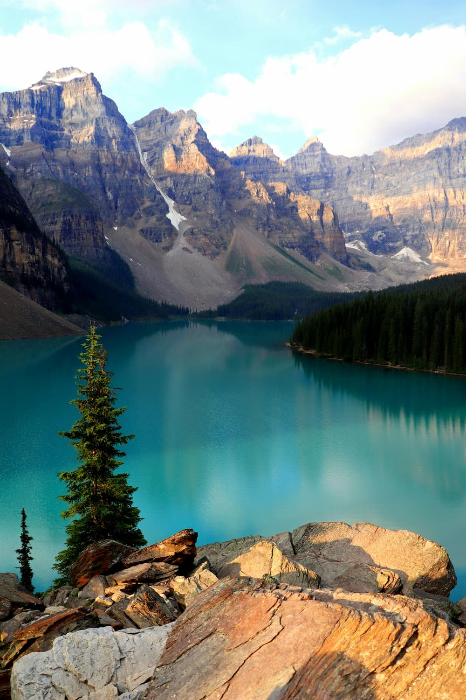
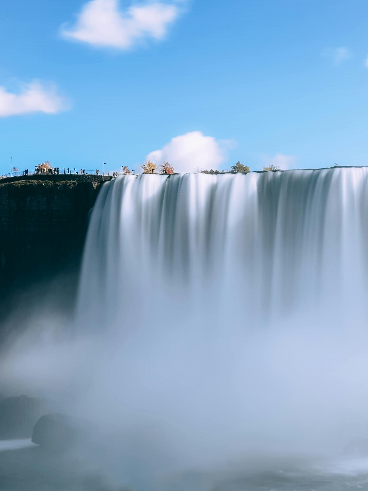
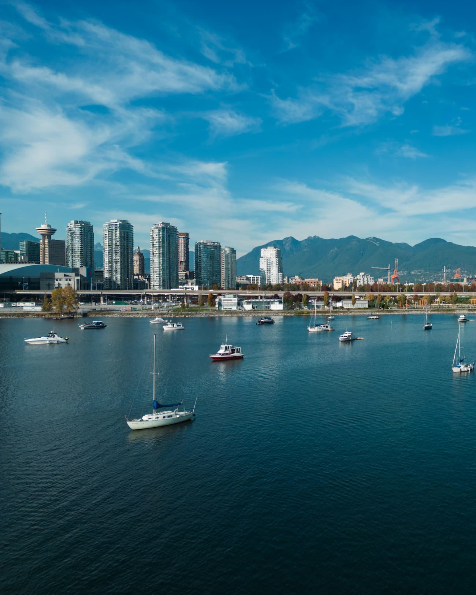

Banff National Park
Banff National Park is famous for beautiful mountains, lakes, forests, and wildlife.
Canada has many famous travel destinations, from mountain parks to waterfalls and modern cities.

Banff National Park is famous for beautiful mountains, lakes, forests, and wildlife.

Niagara Falls is one of the most famous waterfalls in the world and a popular tourist destination.

Vancouver is known for its ocean views, mountains, parks, and multicultural city life.
Watch this short video to see some of Canada’s landscapes and travel highlights.